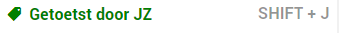

Als u nog een tweede controle laat uitvoeren door een jurist kunt u dit opnemen in het proces door middel van het label Getoetst door JZ. Wanneer de tweede controle is uitgevoerd door de jurist voegt hij/zij dit label toe aan het document om aan te geven dat het klaar is voor de openbaring.
